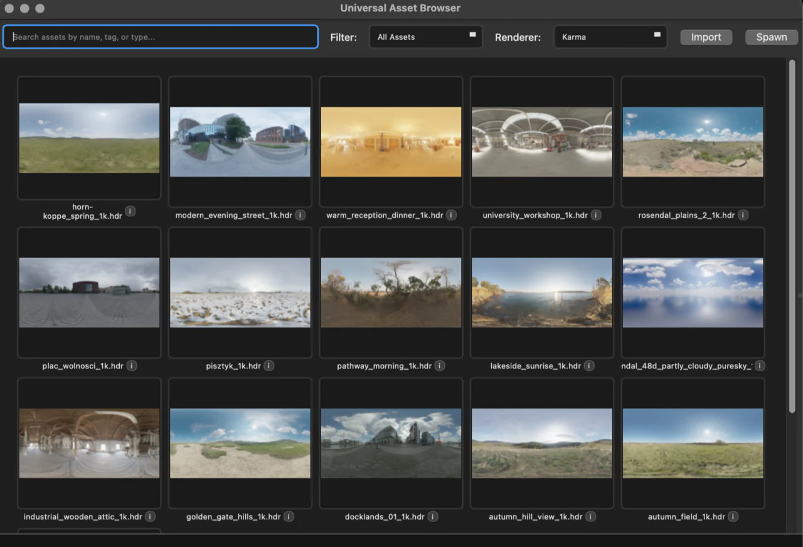
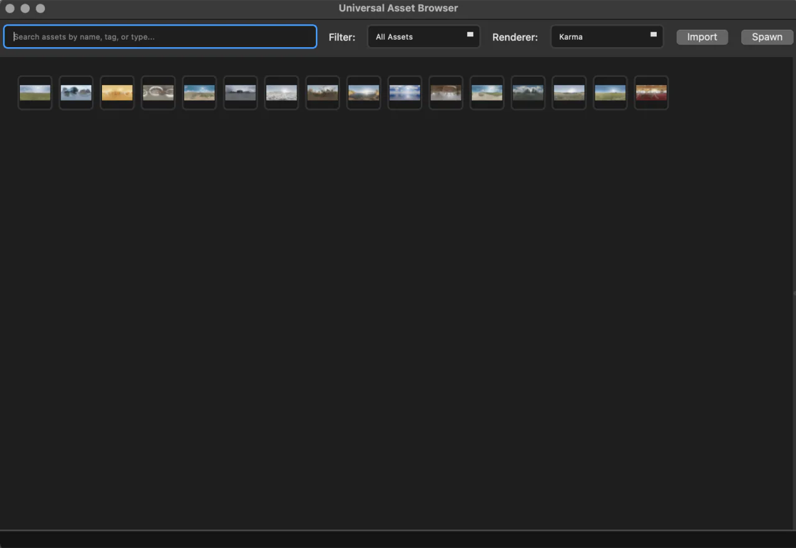
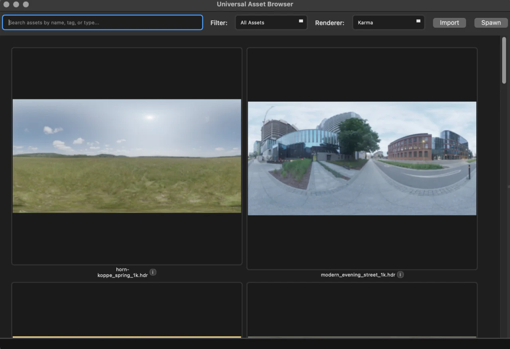

Purpose
- Users often want to easily see up-close the Preview image of an asset to inspect it for their scene. They also often need to glance at many assets at once to get a quick idea of which ones may be suitable. This algorithm is designed to enable that, smoothly transitioning between zoom levels in the browser.



Technical Design Specifications
- The grid's cell size is uniform.
- The grid's cell size must grow and shrink.
- The grid's row and column count must increase and decrease in proportion to the dimensions of the grid's cell size.
- The grid's row and column count still must respond to window resize events, maintaining cell size.
Approach
The core flow is as follows:
resize event (from Qt: resizeEvent)
show event (from Qt: showEvent)
zoom
reflow the grid
compute the new column count
rebuild the layoutNecessary base information about the widget's current state is stored, tracking:
- The minimum size of the grid's cell.
- The scale factor (rate of zoom).
- The last number of columns that was drawn.
There are three triggers for reflowing the grid:
- When the widget is shown. On initial show, reflow the grid for the current widget size.
- When the widget is resized. When the widget's size changes, reflow only if the necessary column count actually changes, which is why the last number of columns drawn is stored.
- When the zoom changes. When the user holds cmd/ctrl and scrolls, zoom is triggered.
Grid Reflow
- Clear the grid. Remove all of the layout items.
- Compute how many columns can fit.
- Start with the available width of the scroll area's visible section.
- Guard for early initialization (layout metrics don't yet exist on init).
- Subtract the grid margins.
- Compute the width of each cell.
- Compute how many cells can fit in the space.
- Guarantee at least one column for small spaces as the minimum size of the widget.
- Compute the scaled size of the cell.
int(min width * scale factor)
- Place the widget contents in each cell (in this case, a Preview).
- Add horizontal stretch to guarantee that each column is the same width.
Zoom
- Filter the event to guarantee that the scroll position doesn't change if cmd/ctrl is held.
- Compute the change in angle.
- Compute the new scale factor.
- Reflow the grid with the new scale factor.
- Compute the new positions of the horizontal and vertical scroll to keep the point under the cursor fixed.
This creates an intuitive way to zoom in and out of the browser's preview images.